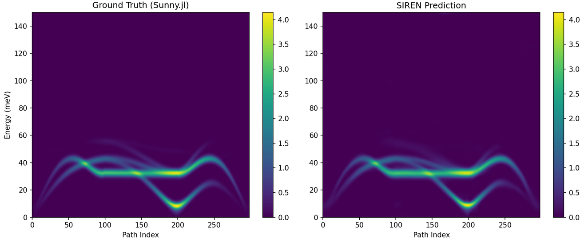
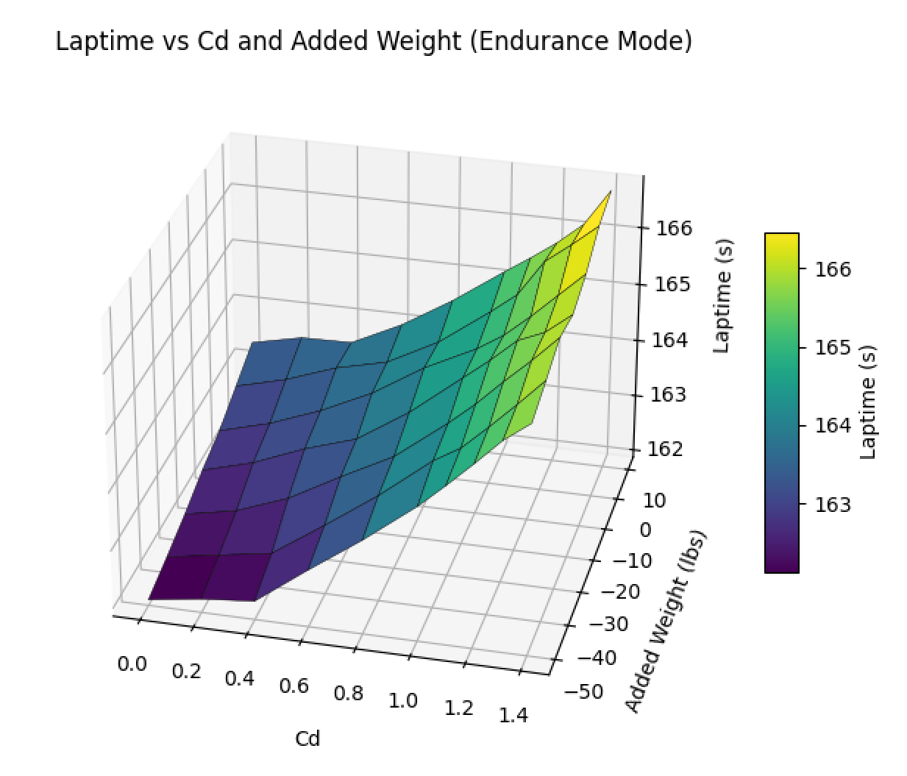
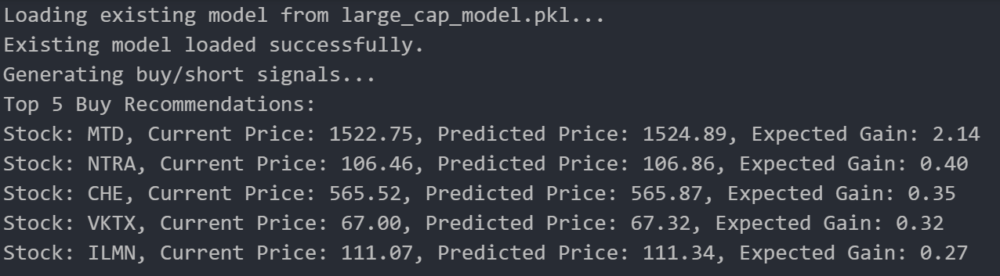

Computer Science · UT Austin
I build models for the real world.
I’m Roy—a researcher and engineer working where machine learning, simulation, and physical systems meet.
Reconstructing material parameters with physics-informed deep learning—and modeling vehicle dynamics for Longhorn Racing.
Selected work
Research, engineering & experimentsPhysics-informed deep learning
Reconstructing 9D Hamiltonian parameters with a differentiable neural surrogate.

Formula Student simulation
Turning vehicle dynamics and telemetry into faster design decisions.

Short-term market modeling
An interpretable ML pipeline for live paper-trading experiments.

Competitive tennis
Years of pressure-tested lessons in resilience, focus, and leadership.
Experience
The concise versionUniversity of Texas at Austin
B.S. Computer Science · GPA 3.94/4.0
Undergraduate Researcher · GAMMA Lab
Physics-informed Bayesian inference, neural surrogates, and high-throughput scientific data pipelines.
Simulation & Validation · Longhorn Racing
Vehicle dynamics models, damper curve analysis, and kinematics tooling.